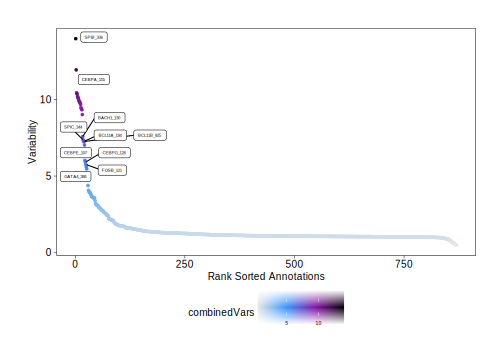
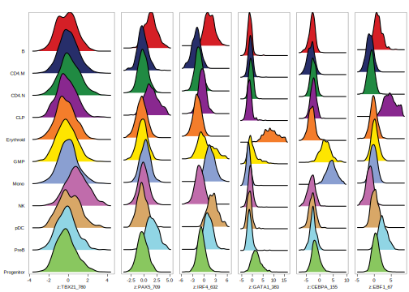

15.1 Motif Deviations
First, lets make sure we have added motif annotations to our ArchRProject.
if("Motif" %ni% names(projHeme5@peakAnnotation)){
projHeme5 <- addMotifAnnotations(ArchRProj = projHeme5, motifSet = "cisbp", name = "Motif")
}We also need to add a set of background peaks which are used in computing deviations. Background peaks are chosen using the chromVAR::getBackgroundPeaks() function which samples peaks based on similarity in GC-content and number of fragments across all samples using the Mahalanobis distance.
We are now ready to compute per-cell deviations accross all of our motif annotations using the addDeviationsMatrix() function. This function has an optional parameter called matrixName that allows us to define the name of the deviations matrix that will be stored in the Arrow files. If we do not provide a value to this parameter, as in the example below, this function creates a matrix name by adding the word “Matrix” to the name of the peakAnnotation. The example below creates a deviations matrix in each of our Arrow files called “MotifMatrix”.
projHeme5 <- addDeviationsMatrix(
ArchRProj = projHeme5,
peakAnnotation = "Motif",
force = TRUE
)
## Using Previous Background Peaks!
## ArchR logging to : ArchRLogs/ArchR-addDeviationsMatrix-945abde0c-Date-2025-02-06_Time-02-14-59.781655.log
## If there is an issue, please report to github with logFile!
## 2025-02-06 02:15:07.011044 : Batch Execution w/ safelapply!, 0 mins elapsed.
## ###########
## 2025-02-06 02:20:56.583871 : Completed Computing Deviations!, 5.947 mins elapsed.
## ###########
## ArchR logging successful to : ArchRLogs/ArchR-addDeviationsMatrix-945abde0c-Date-2025-02-06_Time-02-14-59.781655.logTo access these deviations, we use the getVarDeviations() function. If we want this function to return a ggplot object, we set plot = TRUE otherwise, this function would return the DataFrame object. The head of that DataFrame object is displayed by default when the function is run.
plotVarDev <- getVarDeviations(projHeme5, name = "MotifMatrix", plot = TRUE)
## DataFrame with 6 rows and 6 columns
## seqnames idx name combinedVars combinedMeans rank
## <Rle> <integer> <character> <numeric> <numeric> <integer>
## f336 z 336 SPIB_336 13.9954 -0.0810304 1
## f155 z 155 CEBPA_155 11.9525 -0.1800011 2
## f140 z 140 CEBPB_140 10.4502 -0.1199047 3
## f384 z 384 GATA3_384 10.3798 -0.0476146 4
## f388 z 388 GATA2_388 10.2313 -0.0428557 5
## f383 z 383 GATA1_383 10.1460 -0.0430076 6From the above snapshot of the DataFrame, you can see that the seqnames of the MotifMatrix are not chromosomes. Typically, in matrices like the TileMatrix, PeakMatrix, and GeneScoreMatrix, we store the chromosome information in seqnames. The MotifMatrix does not have any corresponding position information but, instead, stores both the “devations” and “z-scores” from chromVAR into the same matrix using two different seqnames - deviations and z. This becomes important later on if you try to use the MotifMatrix (which is of class Sparse.Assays.Matrix) in functions such as getMarkerFeatures(). In these types of operations, ArchR will expect you to subset MotifMatrix to one of the two seqnames (i.e. select either z-scores or deviations to perform calculations).
We can then plot these variable deviations.
plotVarDev
## Warning: ggrepel: 15 unlabeled data points (too many overlaps). Consider
## increasing max.overlaps
To save an editable vectorized version of this plot, we use the plotPDF() function.
plotPDF(plotVarDev, name = "Variable-Motif-Deviation-Scores", width = 5, height = 5, ArchRProj = projHeme5, addDOC = FALSE)
## Plotting Ggplot!What if we want to extract a subset of motifs for downstream analysis? We can do this using the getFeatures() function. The paste(motifs, collapse="|") statement below creates a concatenated or statement that enables selection of all of the motifs.
motifs <- c("GATA1", "CEBPA", "EBF1", "IRF4", "TBX21", "PAX5")
markerMotifs <- getFeatures(projHeme5, select = paste(motifs, collapse="|"), useMatrix = "MotifMatrix")
markerMotifs
## [1] "z:TBX21_780" "z:PAX5_709" "z:IRF4_632"
## [4] "z:GATA1_383" "z:CEBPA_155" "z:EBF1_67"
## [7] "z:SREBF1_22" "deviations:TBX21_780" "deviations:PAX5_709"
## [10] "deviations:IRF4_632" "deviations:GATA1_383" "deviations:CEBPA_155"
## [13] "deviations:EBF1_67" "deviations:SREBF1_22"As mentioned above, MotifMatrix contains seqnames for both z-scores and deviations, shown above by “z:” and “deviations:”. To get just the features corresponding to z-scores, we can use grep. Unfortunately, in the example motifs shown above, you can see that in addition to “EBF1”, we also selected “SREBF1” which we do not want to analyze. Because of this, we remove it below using the %ni% expression which is an ArchR helper function that provides the opposite of %in% from base R.
markerMotifs <- grep("z:", markerMotifs, value = TRUE)
markerMotifs <- markerMotifs[markerMotifs %ni% "z:SREBF1_22"]
markerMotifs
## [1] "z:TBX21_780" "z:PAX5_709" "z:IRF4_632" "z:GATA1_383" "z:CEBPA_155"
## [6] "z:EBF1_67"Now that we have the names of the features that we are interested in, we can plot the distribution of chromVAR deviation scores for each cluster. Notice that we supply the impute weights that we calculated previously during our gene score analyses. As a reminder, these impute weights allow us to smooth the signal across nearby cells which is helpful in the context of our sparse scATAC-seq data.
p <- plotGroups(ArchRProj = projHeme5,
groupBy = "Clusters2",
colorBy = "MotifMatrix",
name = markerMotifs,
imputeWeights = getImputeWeights(projHeme5)
)
## Getting ImputeWeights
## No imputeWeights found, returning NULL
## Getting Matrix Values...
## 2025-02-06 02:21:05.135753 :
##
## 1 2 3 4 5 6We can use cowplot to plot the distributions of all of these motifs in a single plot.
p2 <- lapply(seq_along(p), function(x){
if(x != 1){
p[[x]] + guides(color = "none", fill = "none") +
theme_ArchR(baseSize = 6) +
theme(plot.margin = unit(c(0.1, 0.1, 0.1, 0.1), "cm")) +
theme(
axis.text.y=element_blank(),
axis.ticks.y=element_blank(),
axis.title.y=element_blank()
) + ylab("")
}else{
p[[x]] + guides(color = "none", fill = "none") +
theme_ArchR(baseSize = 6) +
theme(plot.margin = unit(c(0.1, 0.1, 0.1, 0.1), "cm")) +
theme(
axis.ticks.y=element_blank(),
axis.title.y=element_blank()
) + ylab("")
}
})
do.call(cowplot::plot_grid, c(list(nrow = 1, rel_widths = c(2, rep(1, length(p2) - 1))),p2))
## Picking joint bandwidth of 0.248
## Picking joint bandwidth of 0.259
## Picking joint bandwidth of 0.294
## Picking joint bandwidth of 0.339
## Picking joint bandwidth of 0.315
## Picking joint bandwidth of 0.281
To save an editable vectorized version of this plot, we use the plotPDF() function.
plotPDF(p, name = "Plot-Groups-Deviations-w-Imputation", width = 5, height = 5, ArchRProj = projHeme5, addDOC = FALSE)
## Plotting Ggplot!
## Picking joint bandwidth of 0.248
## Picking joint bandwidth of 0.248
## Plotting Ggplot!
## Picking joint bandwidth of 0.259
## Picking joint bandwidth of 0.259
## Plotting Ggplot!
## Picking joint bandwidth of 0.294
## Picking joint bandwidth of 0.294
## Plotting Ggplot!
## Picking joint bandwidth of 0.339
## Picking joint bandwidth of 0.339
## Plotting Ggplot!
## Picking joint bandwidth of 0.315
## Picking joint bandwidth of 0.315
## Plotting Ggplot!
## Picking joint bandwidth of 0.281
## Picking joint bandwidth of 0.281Instead of looking at the distributions of these z-scores, we can overlay the z-scores on our UMAP embedding as we’ve done previously for gene scores.
p <- plotEmbedding(
ArchRProj = projHeme5,
colorBy = "MotifMatrix",
name = sort(markerMotifs),
embedding = "UMAP",
imputeWeights = getImputeWeights(projHeme5)
)
## Getting ImputeWeights
## No imputeWeights found, returning NULL
## ArchR logging to : ArchRLogs/ArchR-plotEmbedding-9409e4810-Date-2025-02-06_Time-02-21-15.83702.log
## If there is an issue, please report to github with logFile!
## Getting UMAP Embedding
## ColorBy = MotifMatrix
## Getting Matrix Values...
## 2025-02-06 02:21:17.125601 :
##
## Plotting Embedding
## 1 2 3 4 5 6
## ArchR logging successful to : ArchRLogs/ArchR-plotEmbedding-9409e4810-Date-2025-02-06_Time-02-21-15.83702.logWe can plot all of these motif UMAPs using cowplot.
p2 <- lapply(p, function(x){
x + guides(color = "none", fill = "none") +
theme_ArchR(baseSize = 6.5) +
theme(plot.margin = unit(c(0, 0, 0, 0), "cm")) +
theme(
axis.text.x=element_blank(),
axis.ticks.x=element_blank(),
axis.text.y=element_blank(),
axis.ticks.y=element_blank()
)
})
do.call(cowplot::plot_grid, c(list(ncol = 3),p2))
To see how these TF deviation z-scores compare to the inferred gene expression via gene scores of the corresponding TF genes, we can overlay the gene scores for each of these TFs on the UMAP embedding.
markerGS <- getFeatures(projHeme5, select = paste(motifs, collapse="|"), useMatrix = "GeneScoreMatrix")
markerGS <- markerGS[markerGS %ni% c("SREBF1","CEBPA-DT")]
markerGS
## [1] "TBX21" "CEBPA" "EBF1" "IRF4" "PAX5" "GATA1"p <- plotEmbedding(
ArchRProj = projHeme5,
colorBy = "GeneScoreMatrix",
name = sort(markerGS),
embedding = "UMAP",
imputeWeights = getImputeWeights(projHeme5)
)
## Getting ImputeWeights
## No imputeWeights found, returning NULL
## ArchR logging to : ArchRLogs/ArchR-plotEmbedding-9740e407f-Date-2025-02-06_Time-02-21-24.516978.log
## If there is an issue, please report to github with logFile!
## Getting UMAP Embedding
## ColorBy = GeneScoreMatrix
## Getting Matrix Values...
## 2025-02-06 02:21:25.818279 :
##
## Plotting Embedding
## 1 2 3 4 5 6
## ArchR logging successful to : ArchRLogs/ArchR-plotEmbedding-9740e407f-Date-2025-02-06_Time-02-21-24.516978.logp2 <- lapply(p, function(x){
x + guides(color = "none", fill = "none") +
theme_ArchR(baseSize = 6.5) +
theme(plot.margin = unit(c(0, 0, 0, 0), "cm")) +
theme(
axis.text.x=element_blank(),
axis.ticks.x=element_blank(),
axis.text.y=element_blank(),
axis.ticks.y=element_blank()
)
})
do.call(cowplot::plot_grid, c(list(ncol = 3),p2))
Similarly, because we previously linked our scATAC-seq data with corresponding scRNA-seq data, we can plot the linked gene expression for each of these TFs on the UMAP embedding.
markerRNA <- getFeatures(projHeme5, select = paste(motifs, collapse="|"), useMatrix = "GeneIntegrationMatrix")
markerRNA <- markerRNA[markerRNA %ni% c("SREBF1","CEBPA-DT")]
markerRNA
## [1] "TBX21" "CEBPA" "EBF1" "IRF4" "PAX5" "GATA1"p <- plotEmbedding(
ArchRProj = projHeme5,
colorBy = "GeneIntegrationMatrix",
name = sort(markerRNA),
embedding = "UMAP",
continuousSet = "blueYellow",
imputeWeights = getImputeWeights(projHeme5)
)
## Getting ImputeWeights
## No imputeWeights found, returning NULL
## ArchR logging to : ArchRLogs/ArchR-plotEmbedding-9594b3859-Date-2025-02-06_Time-02-21-35.228827.log
## If there is an issue, please report to github with logFile!
## Getting UMAP Embedding
## ColorBy = GeneIntegrationMatrix
## Getting Matrix Values...
## 2025-02-06 02:21:36.506366 :
##
## Plotting Embedding
## 1 2 3 4 5 6
## ArchR logging successful to : ArchRLogs/ArchR-plotEmbedding-9594b3859-Date-2025-02-06_Time-02-21-35.228827.logp2 <- lapply(p, function(x){
x + guides(color = "none", fill = "none") +
theme_ArchR(baseSize = 6.5) +
theme(plot.margin = unit(c(0, 0, 0, 0), "cm")) +
theme(
axis.text.x=element_blank(),
axis.ticks.x=element_blank(),
axis.text.y=element_blank(),
axis.ticks.y=element_blank()
)
})
do.call(cowplot::plot_grid, c(list(ncol = 3),p2))
In addition to the analyses shown above, you may want to plot heatmaps of motif deviations, for example using the plotMarkerHeatmap() function based on the output of getMarkerFeatures(). It is important to remember not to filter for marker features (via cutoff) using the the log2(fold change) of deviations on these heatmaps because this is not relevant for deviations which are not a counts-based measure. Instead, marker features can be identified using MeanDiff (for ex. MeanDiff >= 0.1). Similarly, plotLog2FC should be FALSE.